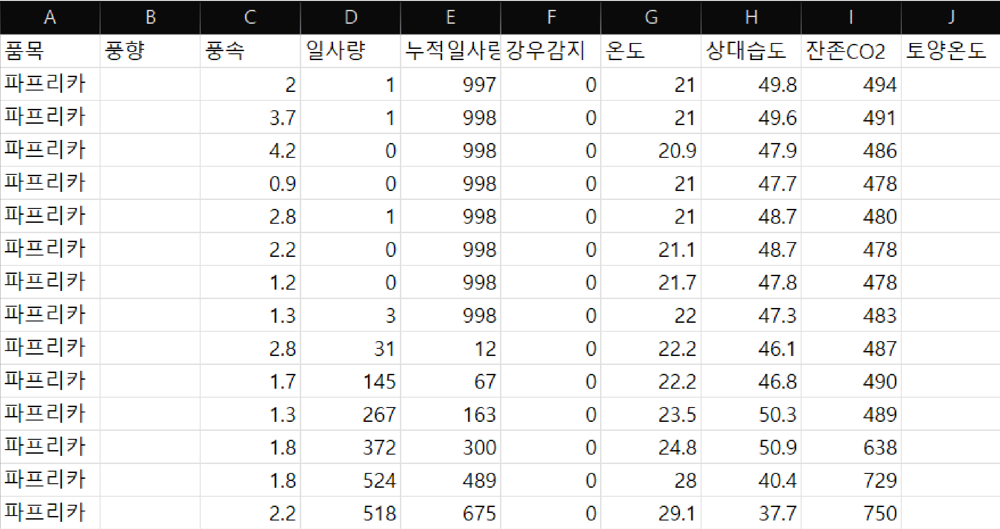
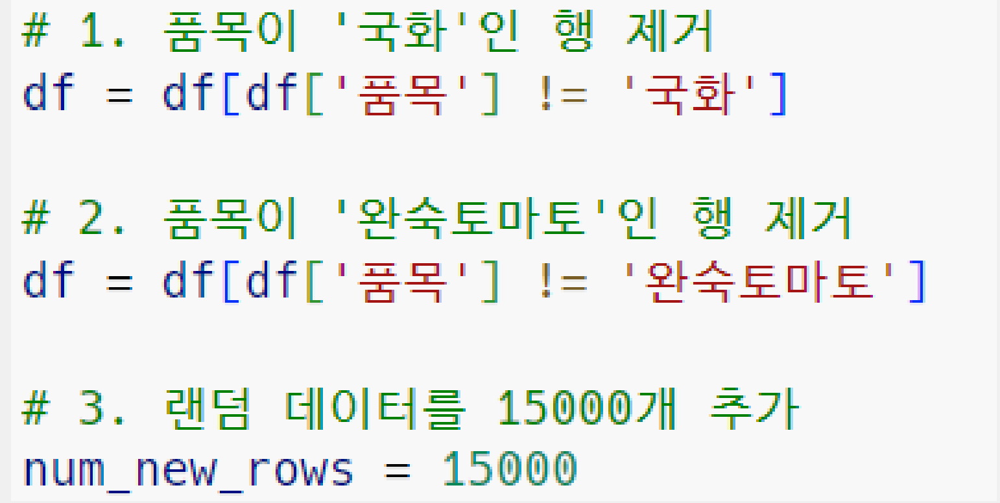
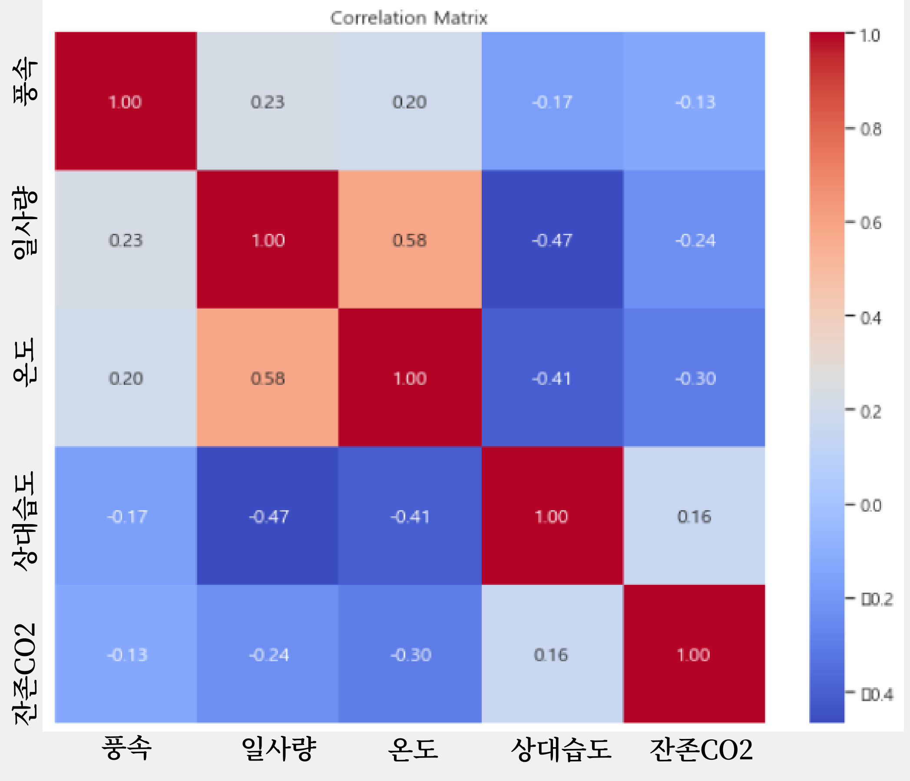
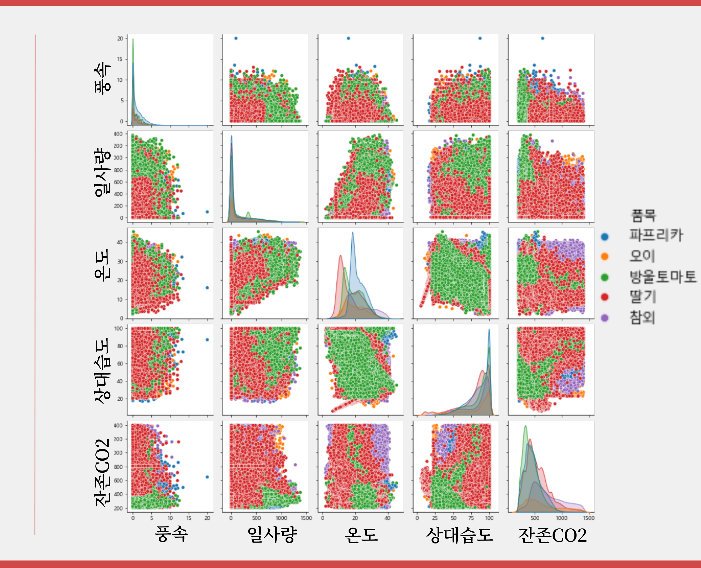
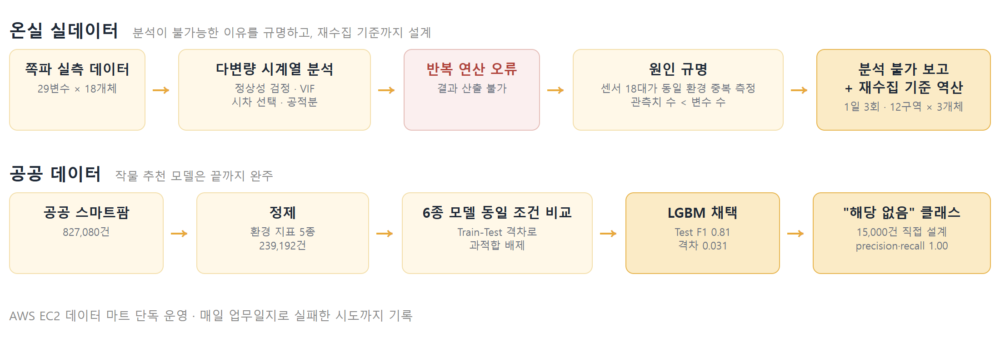
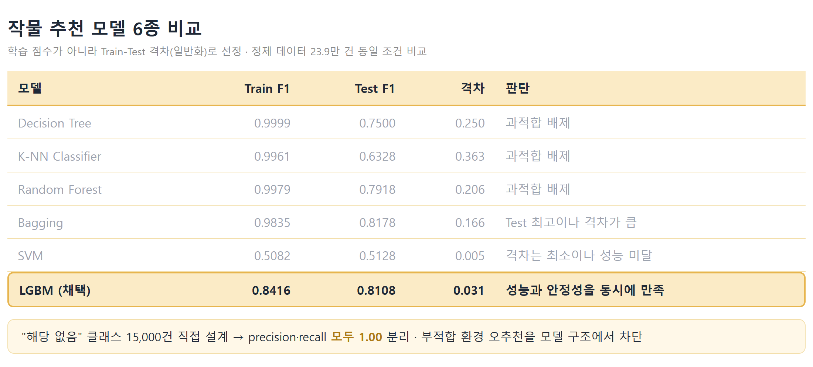
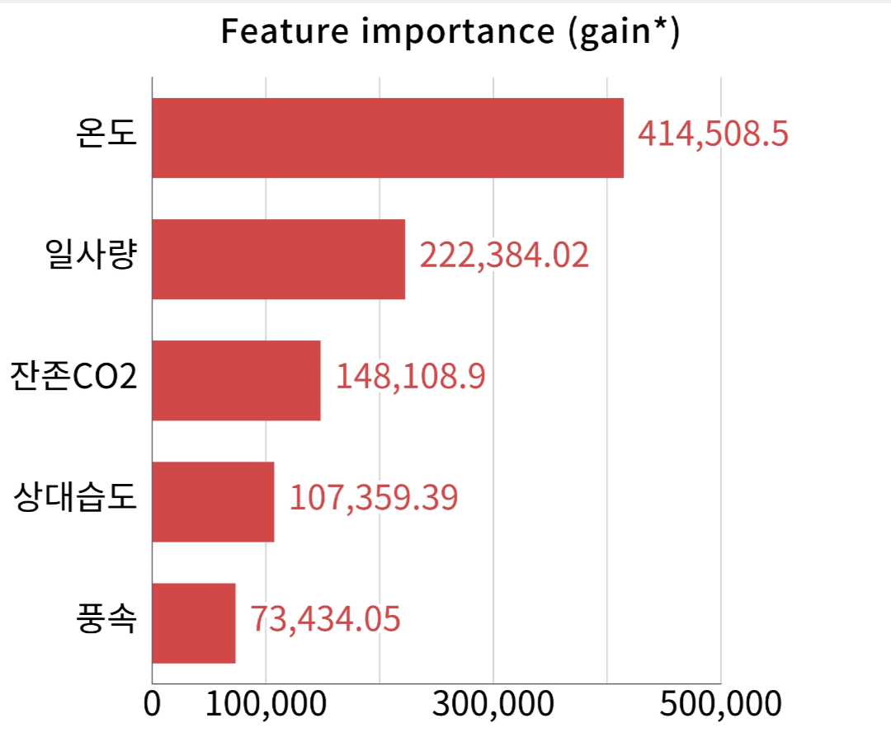
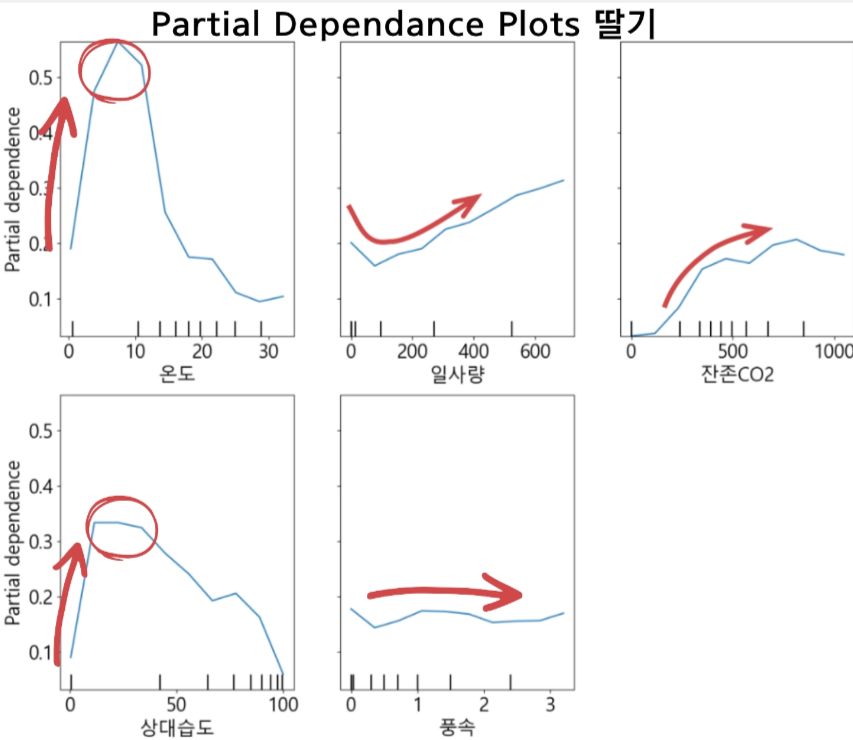

"현 데이터로는 신뢰할 수 있는 결론이 불가능하다"를 근거와 함께 보고하고, 재수집 기준까지 역산해 설계한 데이터팀 인턴. 공공 데이터 82.7만 건으로는 작물 추천 모델(Test F1 0.81) 완성. AWS·SQL 데이터 마트 단독 운영
문제 정의
- 환경 데이터는 분 단위 자동 축적, 생육은 하루 1회 수동 계측. 두 데이터의 품질 격차가 분석의 출발 조건
- 센서 18대가 사실상 동일한 환경을 중복 측정. 개체 간 독립성이 없고 관측치 수가 변수 수보다 적은 구조
- 학습 작물이 5개뿐이면 부적합 환경에도 무조건 5개 중 하나를 추천하는 모델 리스크
데이터
농촌진흥청 스마트팜 데이터 82.7만 건. 작물마다 측정 항목이 달라 그대로는 비교 불가
→ 7개 작물이 공통으로 가진 환경 변수 5종만 추출.
품목 : 파프리카, 방울토마토, 완숙토마토, 참외, 국화, 딸기, 오이

- 제외 · 국화(결측 과다), 완숙토마토(환경 특성 불분명)
- 추가 · 5개 작물 어디에도 맞지 않는 환경을 판별할 "해당 없음" 클래스 직접 생성
- 불균형 · 작물별 건수 5배 이상 격차, 소수 클래스 기준 언더샘플링(클래스당 15,000건)
- 분할 · 학습 대 검증 0.75 : 0.25

| 품목 | 데이터 수 |
|---|---|
| 딸기 | 46952 |
| 파프리카 | 63646 |
| 방울토마토 | 79295 |
| 참외 | 15695 |
| 오이 | 18604 |
| 해당없음 | 15000 |


- 목적 · 모델을 돌리기 전, 작물별로 구분할 만한 차이가 실제로 있는지 확인
분석 설계
| 판단 지점 | 기각한 안 | 채택한 안 |
|---|---|---|
| 온실 분석 방법 | 단변량 개별 분석. 환경 요인 간 상호 영향 반영 불가 | 다변량 VAR·VECM · 여러 시계열의 상호 영향을 함께 추정 |
| 생육 결측 보간 | 평균·직전값 등 임의 대치. 없는 사실을 만들어냄 | S자 생장곡선 근거 보간 · 선행연구 확보 후 선형·스플라인 비교 |
| 검정 오류 대응 | 조건을 바꿔가며 결과가 나올 때까지 강행. 억지 숫자는 신뢰 불가 | 중단 보고 + 재수집 제안 · 원인을 데이터 구조로 규명하고 근거와 함께 보고 |
| 추천 모델 선정 | RF·Decision Tree. Train 0.99+지만 Test 급락, 과적합 | LGBM · Train-Test 격차 최소, 점수보다 일반화 기준 |
| 추천 불가 상황 | 5개 중 강제 추천. 틀린 답을 확신하게 됨 | "해당 없음" 클래스 15,000건 직접 설계 · 모델에게 "모르겠다"는 선택지 부여 |
실행

- 온실 실데이터 분석은 결과를 만들지 못한 것이 아니라 분석 불가라는 결론을 만든 것. 반복 연산 오류를 다중공선성 진단까지 추적해 코드가 아닌 데이터 설계 문제로 규명하고, VAR 최소 관측수 (p+1)×변수 수 ≈ 90포인트를 역산해 "측정기간 1개월이면 1일 3회"라는 즉시 실행형 재수집 기준으로 전달
- 공공 데이터 모델링은 끝까지 완주. 정제한 23.9만 건으로 6종 모델을 같은 조건에서 비교하고, 과적합 배제 기준으로 LGBM 선정
결과

- 선정 기준은 학습 점수가 아니라 Train-Test 격차. 재배 현장에서는 처음 보는 환경에도 작동해야 하므로, 점수가 높은 모델이 아니라 일반화되는 모델을 선정
- Train 0.99대를 기록한 Decision Tree·K-NN·Random Forest는 Test에서 급락해 전부 과적합으로 배제. 격차만 보면 SVM(0.005)이 최소지만 성능 자체가 미달이고, Test 점수만 보면 Bagging(0.8178)이 근소 우위지만 격차 0.166으로 불안정
- 두 조건을 함께 만족하는 LGBM 채택 · Test F1 0.81, 격차 0.031. 비교 6종은 재배 현장에서 추천 근거를 설명할 수 있도록 해석 가능성을 제공하는 모델 중심으로 구성
- "해당 없음" 클래스 15,000건 직접 설계로 precision·recall 모두 1.00 분리. 학습 작물 5종 어디에도 맞지 않는 환경에서 무조건 하나를 추천하는 오추천을 모델 구조에서 차단
추천 근거의 수치화

온도가 압도적 1순위, 풍속이 최하위

온도 10도 부근에서 예측 확률 급등, 습도 30%에서 정점
- 모델이 왜 그 작물을 추천했는지를 변수 기여도(FI)와 변수별 반응 곡선(PDP)으로 설명. "딸기는 온도 10도·습도 30%, 방울토마토는 15도·CO2 400ppm" 같은 재배 가이드 수치로 번역
- 분석 불가 판단은 숨기지 않고 근거와 함께 보고. 현장이 바로 실행할 수 있는 재수집 기준(측정 주기·센서 배치·표본 설계)으로 전달해, 다음 분석이 가능한 데이터가 쌓이는 구조를 만듦
세부 기록
사용 기술 · Python·R·scikit-learn·statsmodels·LightGBM / 시계열 분석 (VAR·VECM·그레인저 인과검정) / AWS EC2·SQL
온실 실데이터 · 분석 불가 규명과 재수집 설계 (쪽파 29변수 × 18개체)
- 반복 연산 오류를 다중공선성 진단까지 추적. 코드가 아니라 센서 18대가 사실상 동일 환경을 중복 측정해 개체 간 독립성이 없는 데이터 설계 문제(관측치 수가 변수 수보다 적음)로 확인. 군집 축약·리샘플링·변수 제거로도 해소 불가
- 재수집 기준 역산: 센서 12구역×3개체 + 검증 10주 표본 설계
- 생육조사 20항목(초장·관부직경·엽장·착과수·당도 등) 정의·단위·측정방법·조사주기 표준화 문서 작성
- 예측 대상(수확량)이 임의 생성값임을 시각화 중 발견. 임시 VAR 결과에 "모델 해석 불가"를 명시해 오인용 차단
작물별 최적 환경 정량 비교 · 요구 온도(참외 24.0도 최고, 딸기 16.5도 최저) · CO2(참외 716.8ppm, 방울토마토 439.2ppm)
전처리 효과 · 전처리 전 Decision Tree F1 0.614 → 전처리 후 Train 0.9999/Test 0.75로 과적합 노출. 점수 상승이 아니라 과적합 판별이 전처리 검증의 목적